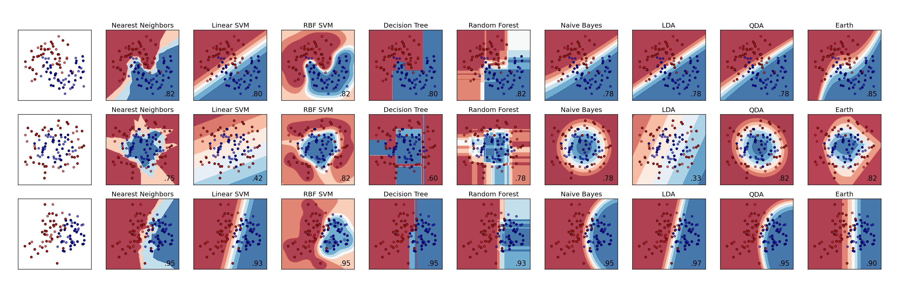

Plotting sckit-learn classifiers comparison with Earth¶
This script recreates the scikit-learn classifier comparison example found at http://scikit-learn.org/stable/auto_examples/classification/plot_classifier_comparison.html. It has been modified to include an Earth based classifier.
Python source code: plot_classifier_comp.py
# Code source: Gael Varoqueux
# Andreas Mueller
# Modified for Documentation merge by Jaques Grobler
# License: BSD 3 clause
# Modified to include pyearth by Jason Rudy
import numpy as np
import matplotlib.pyplot as plt
from matplotlib.colors import ListedColormap
from sklearn.cross_validation import train_test_split
from sklearn.preprocessing import StandardScaler
from sklearn.datasets import make_moons, make_circles, make_classification
from sklearn.neighbors import KNeighborsClassifier
from sklearn.svm import SVC
from sklearn.tree import DecisionTreeClassifier
from sklearn.ensemble import RandomForestClassifier
from sklearn.naive_bayes import GaussianNB
from sklearn.lda import LDA
from sklearn.qda import QDA
h = .02 # step size in the mesh
from sklearn.linear_model.logistic import LogisticRegression
from sklearn.metrics import accuracy_score
from sklearn.pipeline import Pipeline
from pyearth.earth import Earth
np.random.seed(1)
# Combine Earth with LogisticRegression in a pipeline to do classification
earth_classifier = Pipeline([('earth', Earth(max_degree=3, penalty=1.5)),
('logistic', LogisticRegression())])
names = ["Nearest Neighbors", "Linear SVM", "RBF SVM", "Decision Tree",
"Random Forest", "Naive Bayes", "LDA", "QDA", "Earth"]
classifiers = [
KNeighborsClassifier(3),
SVC(kernel="linear", C=0.025, probability=True),
SVC(gamma=2, C=1, probability=True),
DecisionTreeClassifier(max_depth=5),
RandomForestClassifier(max_depth=5, n_estimators=10, max_features=1),
GaussianNB(),
LDA(),
QDA(),
earth_classifier]
X, y = make_classification(n_features=2, n_redundant=0, n_informative=2,
random_state=1, n_clusters_per_class=1)
rng = np.random.RandomState(2)
X += 2 * rng.uniform(size=X.shape)
linearly_separable = (X, y)
datasets = [make_moons(noise=0.3, random_state=0),
make_circles(noise=0.2, factor=0.5, random_state=1),
linearly_separable
]
figure = plt.figure(figsize=(27, 9))
i = 1
# iterate over datasets
for ds in datasets:
# preprocess dataset, split into training and test part
X, y = ds
X = StandardScaler().fit_transform(X)
X_train, X_test, y_train, y_test = train_test_split(X, y, test_size=.4)
x_min, x_max = X[:, 0].min() - .5, X[:, 0].max() + .5
y_min, y_max = X[:, 1].min() - .5, X[:, 1].max() + .5
xx, yy = np.meshgrid(np.arange(x_min, x_max, h),
np.arange(y_min, y_max, h))
# just plot the dataset first
cm = plt.cm.RdBu
cm_bright = ListedColormap(['#FF0000', '#0000FF'])
ax = plt.subplot(len(datasets), len(classifiers) + 1, i)
# Plot the training points
ax.scatter(X_train[:, 0], X_train[:, 1], c=y_train, cmap=cm_bright)
# and testing points
ax.scatter(X_test[:, 0], X_test[:, 1], c=y_test, cmap=cm_bright, alpha=0.6)
ax.set_xlim(xx.min(), xx.max())
ax.set_ylim(yy.min(), yy.max())
ax.set_xticks(())
ax.set_yticks(())
i += 1
# iterate over classifiers
for name, clf in zip(names, classifiers):
ax = plt.subplot(len(datasets), len(classifiers) + 1, i)
clf.fit(X_train, y_train)
score = clf.score(X_test, y_test)
# Plot the decision boundary. For that, we will assign a color to each
# point in the mesh [x_min, m_max]x[y_min, y_max].
try:
Z = clf.predict_proba(np.c_[xx.ravel(), yy.ravel()])[:, 1]
except NotImplementedError:
Z = clf.decision_function(np.c_[xx.ravel(), yy.ravel()])
# Put the result into a color plot
Z = Z.reshape(xx.shape)
ax.contourf(xx, yy, Z, cmap=cm, alpha=.8)
# Plot also the training points
ax.scatter(X_train[:, 0], X_train[:, 1], c=y_train, cmap=cm_bright)
# and testing points
ax.scatter(X_test[:, 0], X_test[:, 1], c=y_test, cmap=cm_bright,
alpha=0.6)
ax.set_xlim(xx.min(), xx.max())
ax.set_ylim(yy.min(), yy.max())
ax.set_xticks(())
ax.set_yticks(())
ax.set_title(name)
ax.text(xx.max() - .3, yy.min() + .3, ('%.2f' % score).lstrip('0'),
size=15, horizontalalignment='right')
i += 1
figure.subplots_adjust(left=.02, right=.98)
plt.savefig('classifier_comp.pdf', transparent=True)
plt.show()
Total running time of the example: 22.09 seconds ( 0 minutes 22.09 seconds)